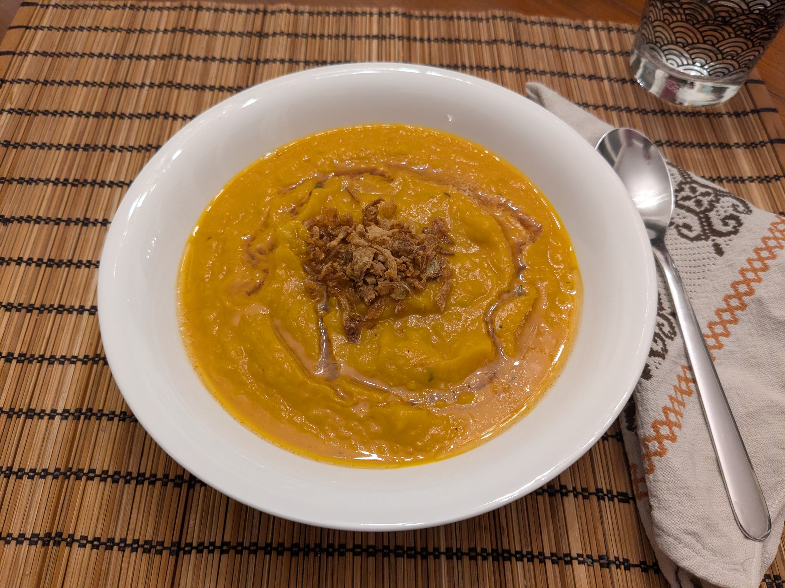

Soupe de potiron rôti

Pour 3-4 personnes :
- Un potiron pas trop gros, idéalement d'une variété un peu sucrée, de 2kg environ
- Un bouquet de thym frais
- 100g de beurre
- Trois oignons
- Un litre de bouillon de légumes ou de poulet
- Deux feuilles de laurier
- Une cuillère à soupe de sirop d'érable
- Un demi-citron
- Sel, poivre, huile d'olive
- Faire préchauffer le four à 190°C. Couper le potiron en deux, enlever les graines à l'intérieur, et le frotter tout autour avec de l'huile d'olive. Saler, poivrer, ajouter quelques branches de thym au centre, et les disposer sur une plaque de four, la face plate sur le dessous.
- Ajouter quelques branches de thym dessus et autour, en gardant quelques branches pour plus tard. Enfourner environ une heure en retournant à mi-parcours, jusqu'à ce que ça soit bien mou, avant que ça ne commence à être brun.
- Pendant ce temps, épluchet et émincer les oignons, et les faire revenir dans une casserole à feu moyen-fort dans le tiers du beurre. Lorsqu'ils deviennent translucides (mais avant qu'ils ne brunissent), ajouter le bouillon, le laurier, et le sirop d'érable, laisser mijoter doucement.
- Pendant ce temps, récupérer les petites feuilles du reste du thym.
- Lorsque le potiron est cuit, récupérer la chair avec une cuillère à soupe et l'ajouter dans la casserole. Laisser mijoter un quart d'heure.
- Retirer le laurier, et bien mixer la soupe. Si on veut qu'elle soit particulièrement douce, on peut la passer au travers d'une passoire fine.
- Faire fondre le reste du beurre dans une petite casserole pour que ça fasse du beurre noisette, quand ça commence à brunir, enlever du feu et ajouter les feuilles de thym, puis un peu de jus de citron.
- Servir la soupe avec un trait du beurre noisette sur le dessus, et pourquoi pas quelques oignons frits.